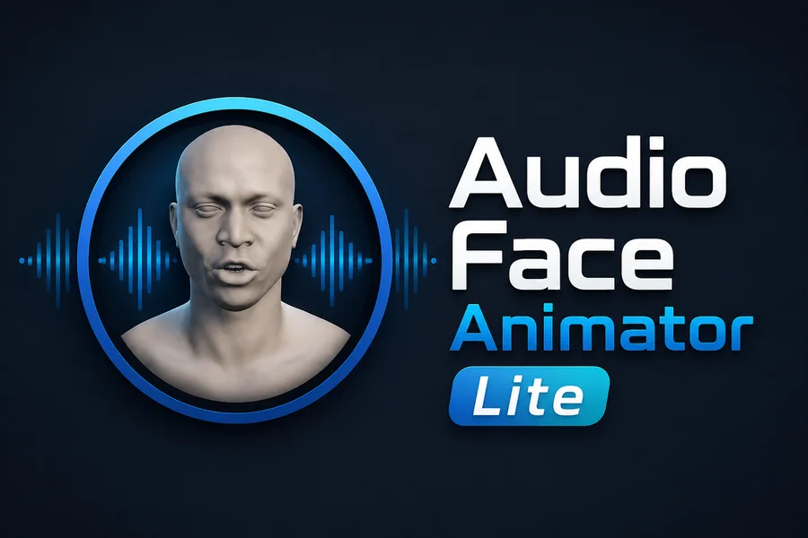
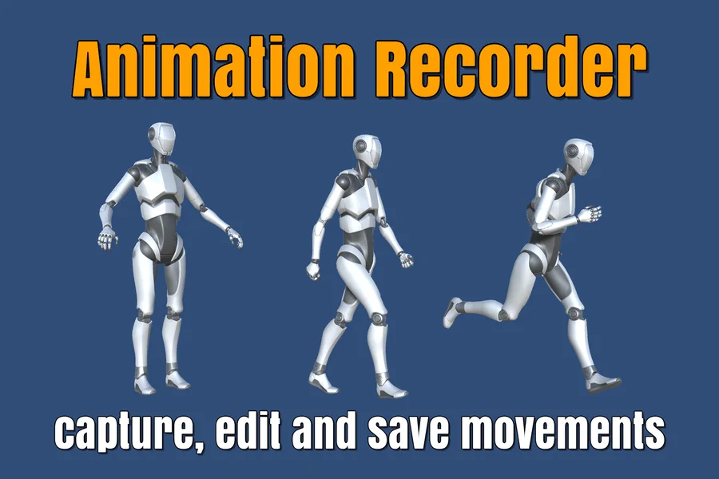
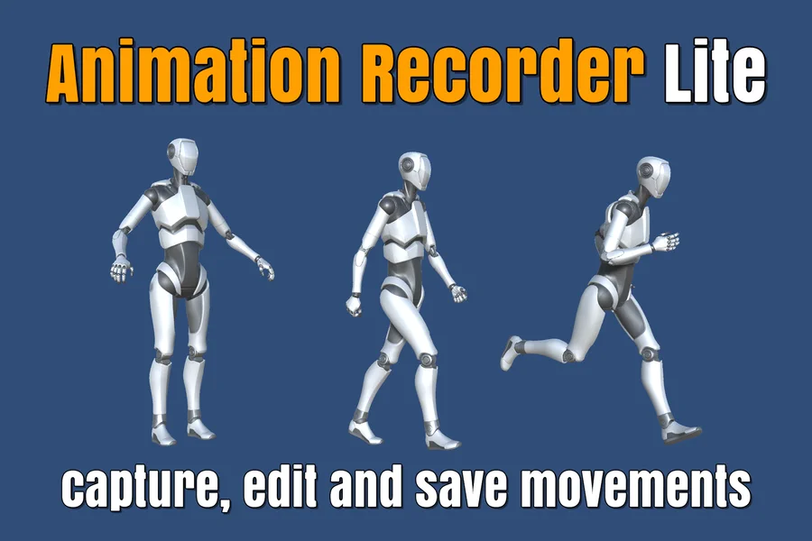
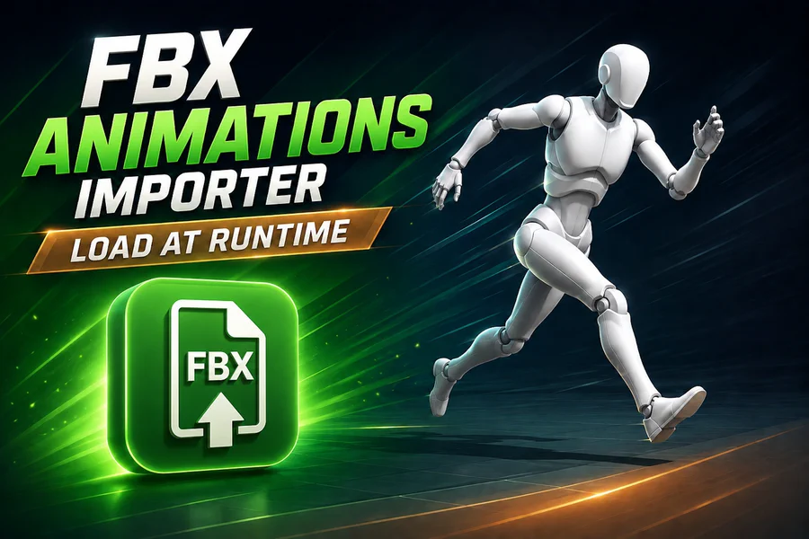
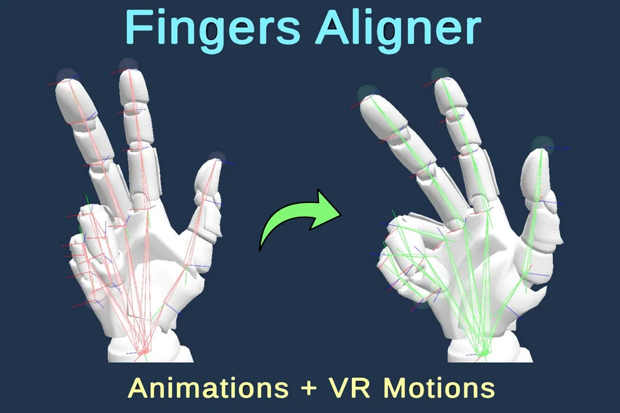
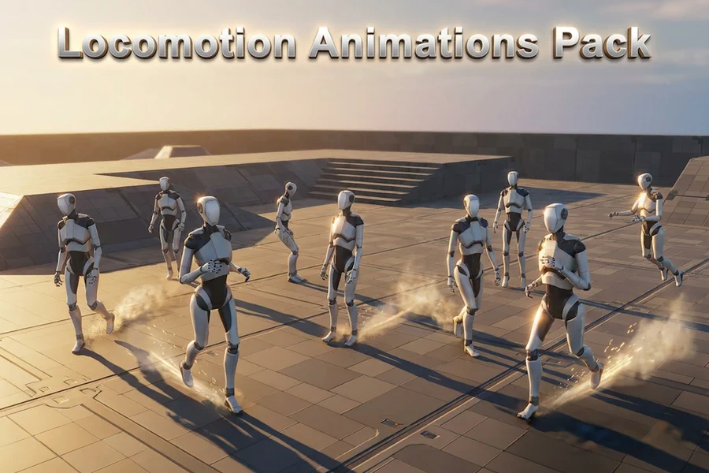
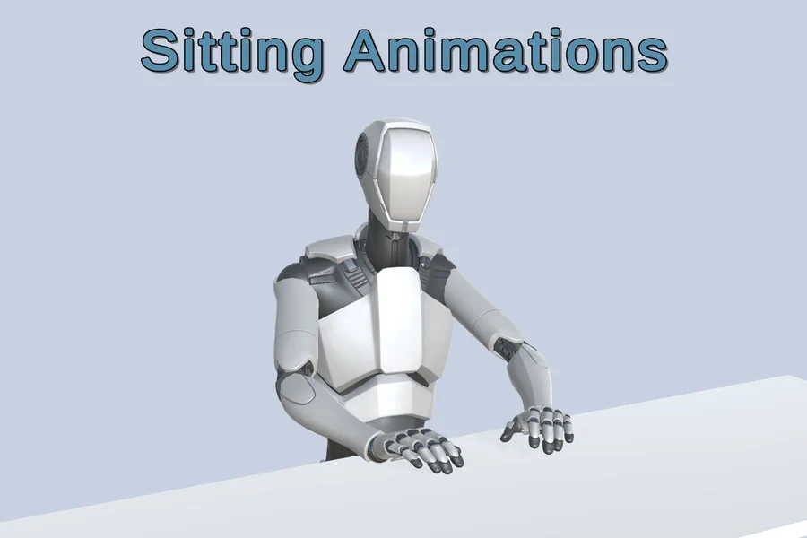
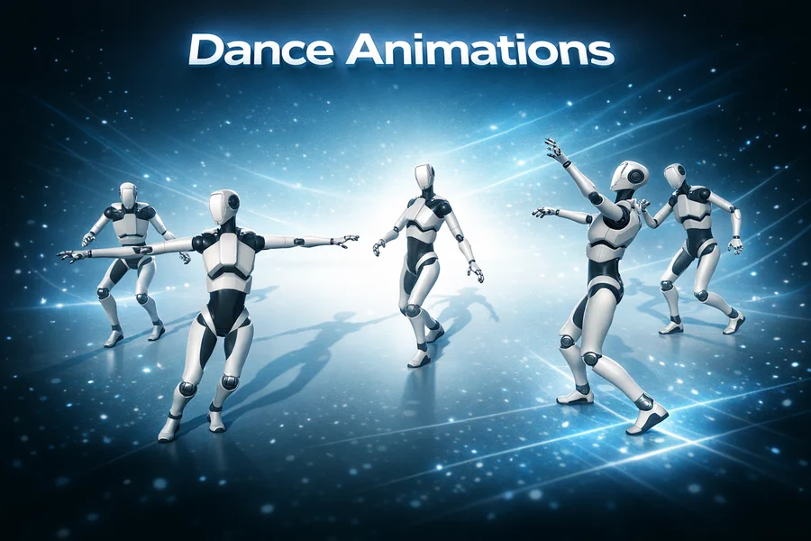
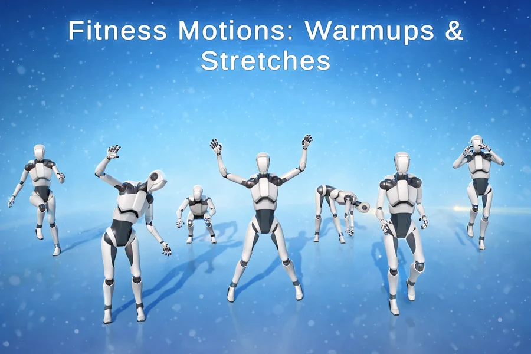

Assets on the Unity Asset Store
-
 Learn more
Animation Tools
Learn more
Animation ToolsAudio Face Animator
Turn any audio clip into facial animation. Generates lip-sync and expressions on your character's blendshapes, with ARKit-compatible rigs and streaming audio support.
-

Learn moreAnimation ToolsAudio Face Animator Lite
The free edition of Audio Face Animator — try audio-driven lip-sync and facial expressions on your own characters before upgrading.
View on Asset Store Free -

Animation ToolsAnimation Recorder
Capture model movement in real time or in the Editor, trim and edit the result, then save it as an AnimationClip or export it to FBX and GLB.
-

Animation ToolsAnimation Recorder Lite
A lightweight, free build of Animation Recorder for recording skeletal animation straight into AnimationClips.
View on Asset Store Free -
Modeling Tools
FBX Runtime Exporter
Export any object from your Unity scene to FBX — at runtime or in the Editor — including meshes, skinning, blendshapes, materials, textures, terrain and animation.
View on Asset Store €13.79 -

Modeling ToolsFBX Animations Importer
Import animations from FBX files directly at runtime — or in the Editor — and convert them into Unity AnimationClips.
View on Asset Store €13.79 -

Animation ToolsMovement Fingers Aligner
Fixes the finger rotations that retargeting always breaks. Produces natural hand poses for character animation and VR, and works with the Meta Movement SDK.
-
Utilities
Open File Dialog for Windows
Native Windows open/save file dialogs for your Unity builds — filters, multi-select and folder picking, with no external dependencies.
View on Asset Store €9.20 -

3D AnimationsComplete Locomotion Animations Pack
A full mocap locomotion set — idle, walk, run, turns and jumps — recorded on a humanoid rig and ready to drop into an Animator Controller.
View on Asset Store €9.19 -

3D AnimationsSitting Animations Pack
Humanoid animations of a character seated at a desk: idle poses, typing and writing — ideal for offices, classrooms and dialogue scenes.
View on Asset Store €9.19 -

3D AnimationsDance Animations
A mocap dance collection spanning breakdance, waltz and folk-inspired routines, delivered as clean humanoid clips.
View on Asset Store €9.19 -

3D AnimationsFitness Motions: Warmups & Stretches
Motion-captured warmup and stretching routines for fitness, wellness and training apps, retarget-ready on any humanoid avatar.
View on Asset Store €9.19
About DevEloop
DevEloop is a small independent studio publishing on the Unity Asset Store since 2024. We are focused on assets with animations, covering the whole path a clip takes — capture, cleanup, export, or ready-made.